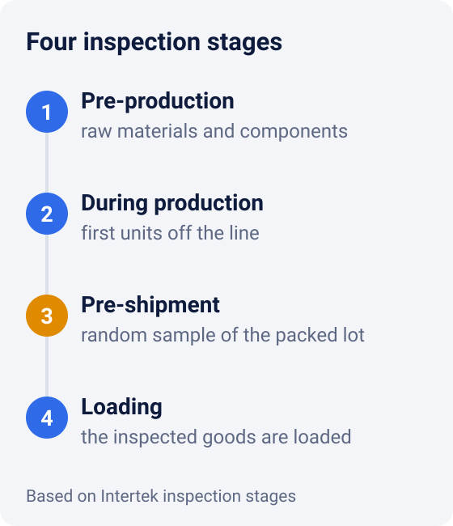
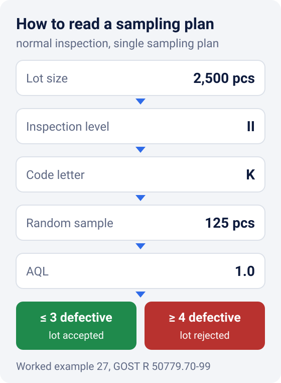

Quality Inspection in China: How Pre-Shipment Inspection Works
Defects are easiest to fix while the goods are still at the factory. That is why the main inspection happens before shipment: once the goods are finished and packed, an inspector draws a sample and checks it against the contract specifications4. A sampling plan under ISO 2859-1 sets how many units to check and how many defects are acceptable.
Below we cover the inspection stages and how to read a sampling plan using a worked example. Then we look at which defects are never acceptable and what to do if a lot fails.
When to inspect: four stages
A lot can be inspected at four stages. Intertek, one international inspection company, describes them like this4:
- Pre-production. Before the line starts, the inspector spot-checks the materials and parts bought for your order4.
- During production. Once the line starts turning out finished units, the inspector checks them for defects and deviations and suggests how to fix them4. For appliances, Intertek normally runs this check when 10-15% of the order is complete5.
- Pre-shipment. The goods are finished, packed and ready to ship. The inspector pulls a random sample and checks quantity, workmanship, function, color, dimensions and packing4.
- Loading. The inspector makes sure the goods loaded into the container are the same goods that passed inspection4.

You do not have to order all four. Intertek recommends a during-production inspection for large orders, continuous production lines and strict shipping deadlines. It also makes sense if the pre-production inspection turned up problems5.
FBL Group can also inspect your lot before shipment: we work in China and inspect goods right at the factory. To discuss your order, send us a request.
Why inspectors check a sample, not every unit
Checking every unit in a lot of several thousand pieces is slow and expensive. So inspectors check a sample following the rules of acceptance sampling. For discrete items, these rules come from the ISO 2859 series. The current edition of Part 1, ISO 2859-1:2026, was published in January 2026 and replaced the 1999 edition1.
The key parameter of a plan is the AQL, the acceptance quality limit. It is the worst average level of defects in production that is still considered satisfactory when a series of lots is inspected by sampling2. AQL is expressed as a percentage of defective units or as defects per 100 units2. For example, an AQL of 1.0 for defective units means 1%.
Two things to keep in mind:
- AQL is not permission to ship defects. The standard warns explicitly that setting an AQL does not give the supplier the right to knowingly supply defective units2.
- AQL must be agreed in advance. The AQL is specified in the contract or set by the party responsible for acceptance2. If it is not written down, you and the factory have no agreed acceptance criterion.
How to read a sampling plan: an example
A plan needs three inputs: lot size, inspection level and AQL. There are three general inspection levels: I, II and III. Unless otherwise specified, level II is used2.
Let's take a worked example from the Russian national standard GOST R 50779.70-99, an introduction to the ISO 2859 system. Say the lot is 2,500 units, inspection level II, AQL 1.03.
- Code letter. In the code letter table, lots of 1,201 to 3,200 units at level II get code K2.
- How many units to check. Code K means a sample of 125 units2. They are drawn from the lot at random.
- Acceptance and rejection numbers. For AQL 1.0 at code K, the acceptance number Ac is 3 and the rejection number Re is 43.
- Decision. If the sample has 3 defective units or fewer, the lot is accepted. If it has 4 or more, the lot is rejected.

The sample grows more slowly than the lot. The same standard also works through a lot of 5,000 units at level II and AQL 0.65. Here the code is L, the sample is 200 units, and the lot is accepted if there are no more than three defective units3.
We do not reproduce the standard's tables here. For your own lot, use the tables of the standard named in your contract. The examples above follow the tables of earlier editions (ISO 2859-1:1999 and before). If your contract cites the 2026 edition, check against it.
Which defects are never acceptable
Not all defects matter equally, so they are grouped into classes, each with its own AQL3. The most important class is critical nonconformities: defects that make the product unsafe or hazardous to use3. The rest are split into major and minor3. Inspection companies use the same three labels: Intertek, for example, talks about critical, major and minor defects5.
There is no acceptable percentage for critical defects3. The standard allows every unit to be checked for critical nonconformities. A lot can be rejected if the sample contains even one of them2.
The standard will not decide for you which defects belong to which class. Classes depend on the specific product, so general standards cannot set them3. That means the list of defects by class has to be drawn up before inspection and agreed with the factory. While you are at it, write the buyer's right to inspect the lot before shipment into the contract.
Sample and checklist: what to prepare before inspection
The inspector compares the lot with whatever you give them. If requirements are not written down, there is nothing to check against. Before the inspection, prepare:
- The approved sample. The unit you signed off before mass production. Keep it yourself, or leave it at the factory marked as yours, and attach photos and dimensions to the inspector's brief.
- Requirements, point by point. The same points the inspector checks: quantity, workmanship, function, color, dimensions, packing4. Write a tolerance for each one, for example size "±1 cm", color "matches the sample".
- A defect list by class. What counts as critical, major and minor for your product.
- The sampling plan. The inspection level and AQL for each class, as written in the contract.
- Labeling and packing. Labels, barcodes, inserts, carton and weight. Mistakes here are costly too, and they are easier to fix at the factory than after delivery.
The lot failed inspection: what to do
A failed lot does not have to be scrapped. Depending on the situation, it can go through 100% inspection, with defects repaired or defective units replaced. It can also be sold at a discount or put to other use3.
In practice the sequence usually looks like this:
- Get the report with photos of the defects and see which defect classes exceeded the limits.
- Agree with the factory on sorting the whole lot, repairs or replacement of defective units.
- Re-inspect after sorting. The inspector should know the lot is being resubmitted and pay particular attention to the defects it was rejected for3.
- Ship only after the lot passes.
So schedule the inspection with a buffer before the shipping date. If the lot fails, you still have time for sorting and re-inspection.
How FBL Group inspects a lot
We check a sample from the lot at the factory before shipment. Afterwards you receive photos, video and a written report.
If the goods go to our warehouse in China, they are counted and checked again on receipt, then packed and labeled if needed. See our fulfillment page for details. Why a lot can be delayed before it even ships is covered in our article on why shipments from China get delayed. It also shows how to build in a time buffer. Who we are and where we work is on the about page.
Quick checklist
- Approve a sample before production starts.
- Write the inspection level and AQL for each defect class into the contract.
- Draw up a defect list: critical, major, minor.
- For large orders, add a during-production inspection.
- Schedule the pre-shipment inspection once the lot is finished and packed, with time left for sorting.
- Check labeling and packing together with the goods.
- Do not ship a lot that failed until it passes re-inspection.
To have your lot inspected before shipment, send us a request.
*This article is for information only and is not legal advice. The acceptance requirements for your lot are set by your contract with the supplier.*
Sources
- ISO. ISO 2859-1:2026 Sampling procedures for inspection by attributes — Part 1 — standard page, edition 3, January 2026.
- Rosstandart, text at meganorm.ru. GOST R ISO 2859-1-2007 — Russian national standard identical to ISO 2859-1:1999 (in Russian).
- Text at files.stroyinf.ru. GOST R 50779.70-99 (ISO 2859-0-95), introduction to attribute sampling — worked examples 10 and 27 (in Russian).
- Intertek. Consumer Goods Inspections.
- Intertek. Product Quality Inspections (appliances).
Links checked on 2 November 2026. This article is general guidance, not legal advice.